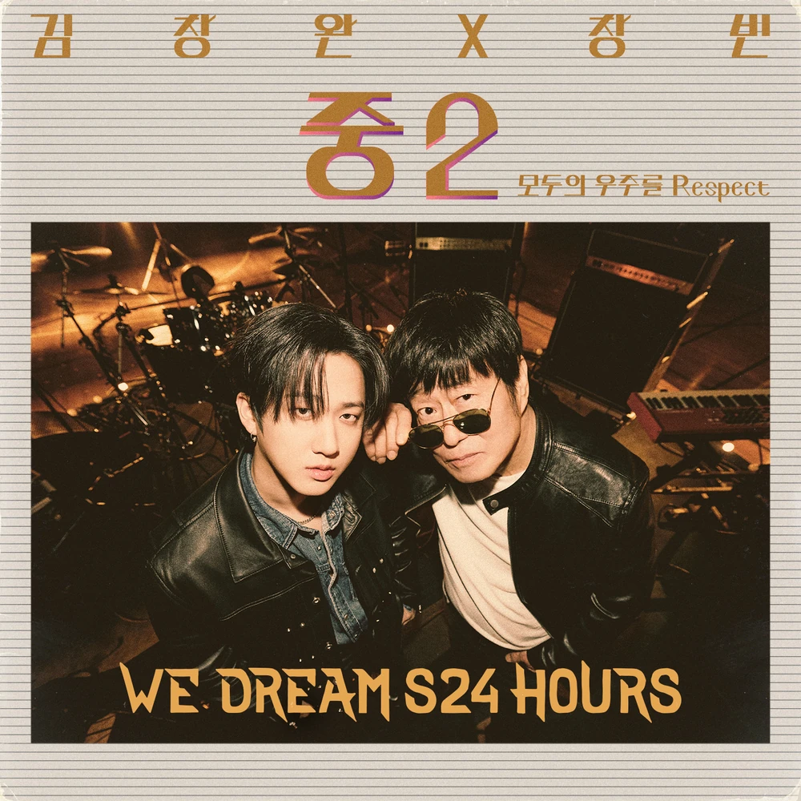
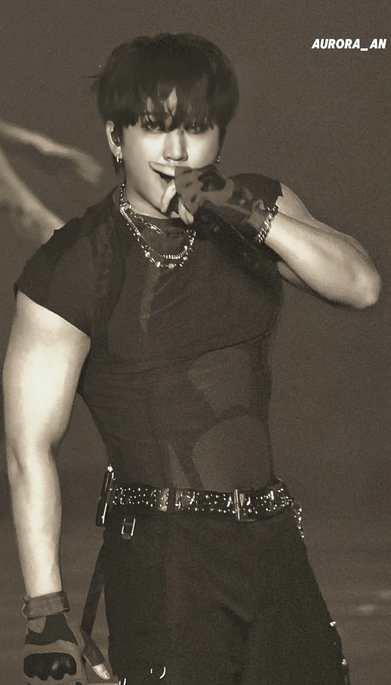
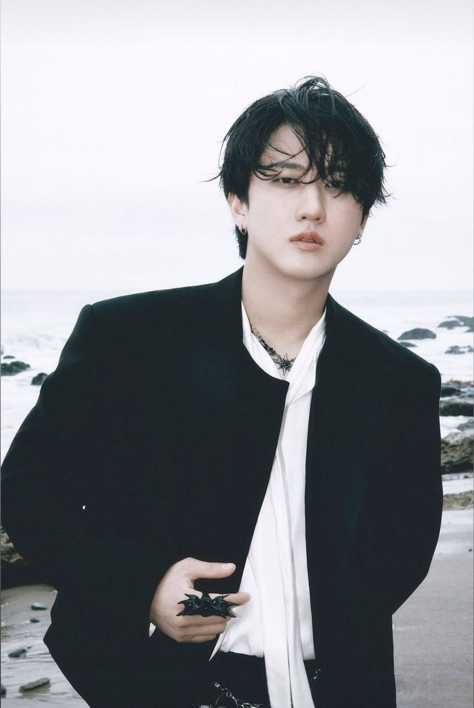

Seo Chang Bin
Perfil
Nombre completo: 서창빈 / Seo Chang Bin
Apodos:Binnie, Dwaekki
Profesión: Rapero, Cantante, Compositor, Bailarín y Productor.
Fecha de nacimiento:11-Agosto-1999 (26 Años)
Lugar de nacimiento: Yongin, Corea del Sur
Estatura: 169 cm
Peso:62 kg
Tipo de sangre: O
Signo zodiacal: Leo
Signo zodiacal chino: Conejo
Familia: Padres y hermana mayor.
Agencia: JYP Entertainment
Programas de TV
Kingdom (Mnet, 2021)
Show Me The Money 9 (Mnet, 2020)
King of Mask Singer (MBC, 2020) Ep. 261
Stray Kids (Mnet, 2017)
Programa de Radio
(SBS) NCT Night Night (09.09.2018, Junto a Chan, Woo Jin y Lee Know)
Discografía
| Información | Single |
|---|---|
Fly High |
|
Kim Chang Wan & Seo Chang Bin중2 (모두의 우주를 Respect) |
 |
Colaboración de Videos musicales
Jun. K - R&B ME (Feat. Seo Chang Bin de Stray Kids) (2025)
ITZY - VAY (Feat. Chang Bin de Stray Kids) (2024)
F.HERO & MILLI - Mirror Mirror (Feat. Chang Bin) (2021)
Yoon Ji Sung - You like the wind (Feat. Chang Bin (Stray Kids)) (2019)
Curiosidades
Estudios:Bora High School (Graduado)
Periodo de entrenamiento: 2 años.
Modelo a seguir:G-Dragon, Kendrick Lamar y sus padres.
Hobbies: Escuchar música e ir de compras.
Especialidad:Componer y rapear.
Quiso convertirse en cantante ya que cuando bailaba y rapeaba en
los festivales del colegio, la reacción del público se le hacia inolvidable.
Perteneció a la academia de rap y baile "MU DOCTOR ACADEMY".
Cuando fue aceptado en JYP, sus padres estaban muy orgullosos de él y le
dijeron que era un genio, que debieron haberlo dejado hacer música cuando era
más joven. Changbin dijo que él estaba más feliz de ser aceptado en la agencia
que ser aceptado en la universidad.
Si no hubiera sido idol, hubiera querido ser tatuador.
Cuando asistía a clases de música aprendió ballet y danza contemporánea.
Tiene 102 canciones con derechos de autor a su nombre según Korea Music Copyright Association
imágenes

